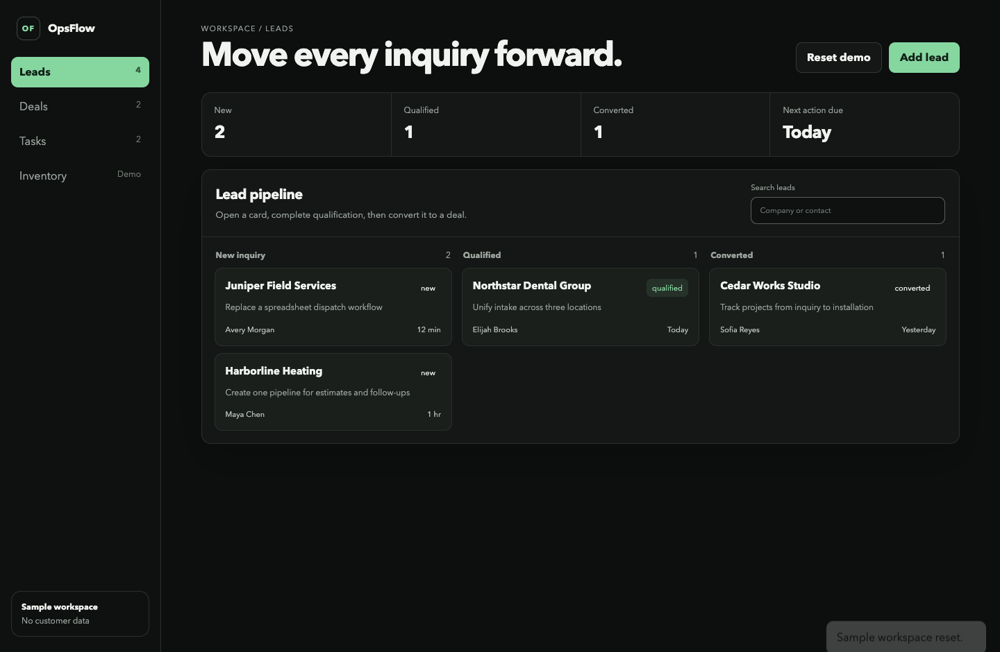
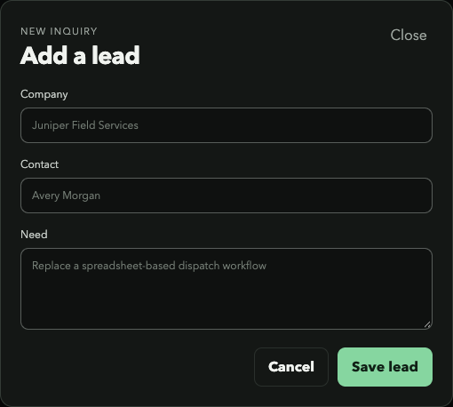
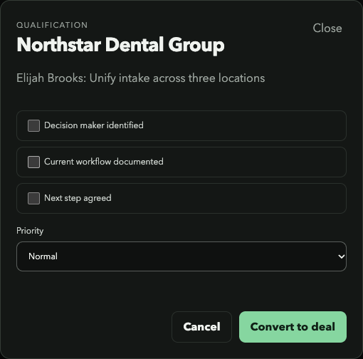
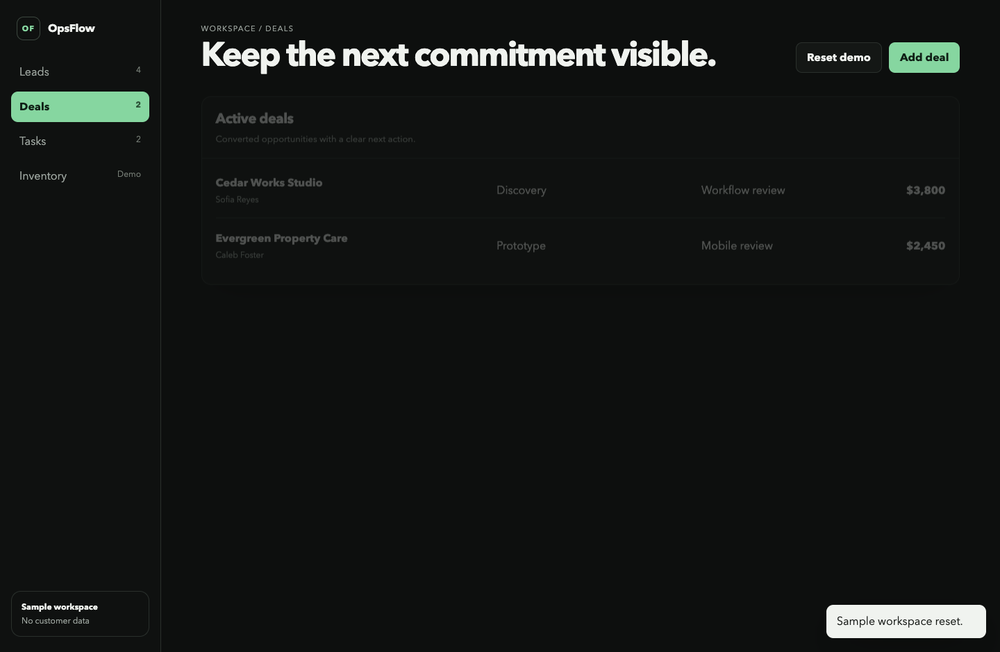
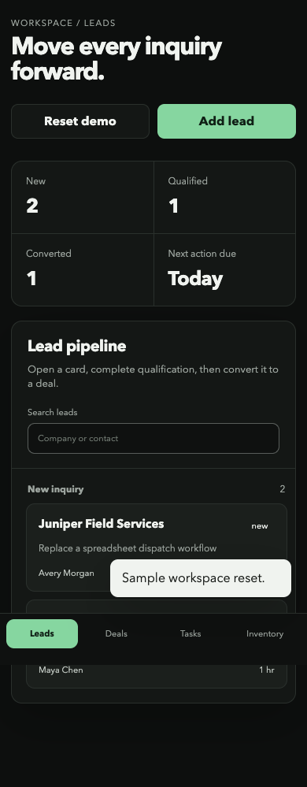
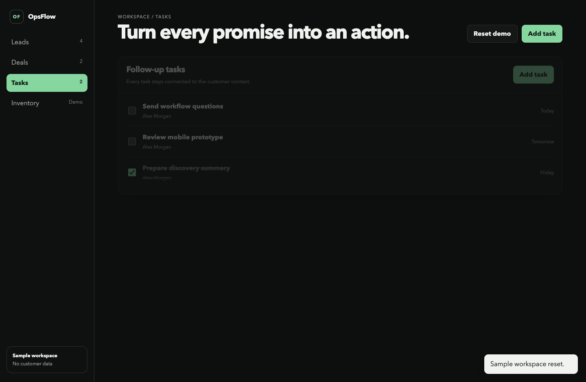

Problem
Candidate details, company context, city choices, tasks, and stage requirements needed one coherent workflow with fewer ambiguous transitions.
A custom workflow for teams managing candidates, companies, locations, stage requirements, and follow-up tasks in one responsive system.
Candidate details, company context, city choices, tasks, and stage requirements needed one coherent workflow with fewer ambiguous transitions.
Model the path first, keep each card editable, require stage checklist completion, and preserve a clear next action on desktop and mobile.






This public case uses independent sample data and branding. The underlying private system includes server modules, PostgreSQL migrations, authentication, MFA, API tests, browser checks, and documented deployment gates. This case does not claim customer adoption metrics or expose production records.